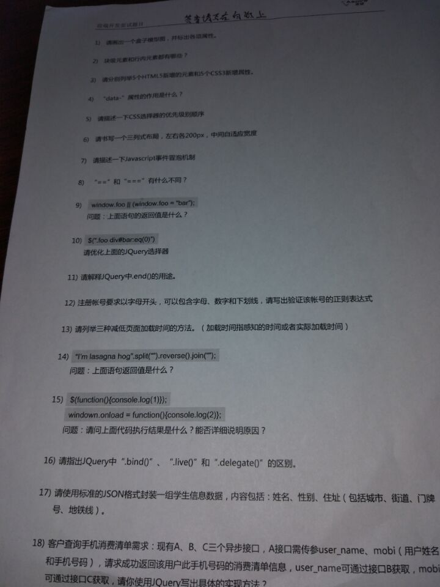
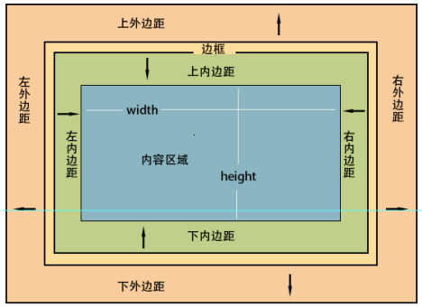
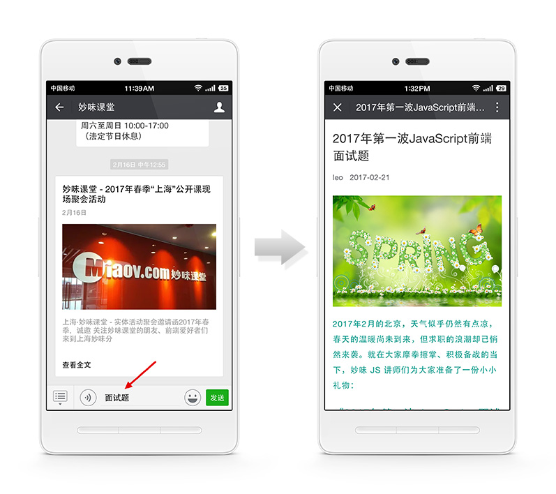

妙味面试题第三季更新喽~超值干货越看越猛烈！
2017年02月28日
找工作的前端小伙伴们，干货又来啦，火钳围观！！！
本次更新，来得比上次的晚了一些些，只因上海新开班琐事繁多……不过，像这样的内容，只能晚来，不能不来，面试帖是个长期的行为，绝不能太监了！
好了废话不多说，先晒一张面试题抓拍图（请原谅照片的模糊吧，本来这位朋友面试就紧张，拿出手机哆哆嗦嗦的，再避开考官“咔嚓”一下，能拍下来算是好的啦~）： 
头几道题略有些看不清？木事儿，我们整理好了，往下看：
题目
1. 请画出一个盒子模型图，并标出各项属性。
话说这题也是醉醉的，画就画吧，喏：

虽然有点像故宫……啥？你没去过故宫？好吧……
注意别忘了那个边框，要表示的“厚”一些~
2. 块级元素和行内元素都有哪些？
简直是送分题嘛：
块级元素：
div，section，ul，dl，ol，li，dt，dd，p，h1-h6, nav……
行内元素（又叫内联、内嵌元素）：
span, em, time, mark, strong, a……
3. 请分别列举 5 个 HTML5 新增的元素和 5 个 CSS3 新增属性：
天呐，这是哪家公司？尽出送分题：
5 个 HTML5 新增的元素：
section，nav，time，mark，header, footer……
5 个 CSS3 新增属性：
box-shadow， text-shadow，background-size，background-clip，mask， transform，filter……
但要小心，别光背，万一人家说：6个呢？7个呢……往下简直不敢想，所以，还是学扎实点吧！
4. data-属性的作用是什么？
data 自定义属性作用：
1. data 自定义属性，本质就是给元素添加了个自定义属性，
本来没有什么特殊的，只是一个官方化的自定义属性的添加方式，
在 js 中可以通过 dataset 统一管理；
2. 通常的作用，一般我们会在 data 中存储一些和当前元素关联度比较大的数据；
3. 一般也会用来做元素关联，比如给元素加索引。
5. 请描述一下 CSS 选择器的优先级别顺序？
id > class > tag > *
但请注意，这道题有坑，例如：
标签如发生嵌套，相应的样式继承优先级又是怎样的规律？
字体样式的继承和盒模型的样式继承有何不同？它们的优先级有何影响？
样式表中如果设置了同样的样式，它们的排列顺序不同的话，优先级又是遵循何种规律？
……等等诸如此类。
所以，要知其然、更要知其所以然~~
6. 请书写一个三列式布局，左右各200px，中间自适应宽度？
传说中的 “双飞翼布局？圣杯布局？尿壶布局？”，还有中间要先加载没提么？
不管了，参考答案：
-- css --
.left {
position: absolute;
left: 0;
top: 0;
width: 200px;
}
.right {
position: absolute;
right: 0;
top: 0;
width: 200px;
}
.center {
margin: 0 200px;
}
-- html --
< div class="left" ></div>
< div class="center" ></div>
< div class="right" ></div>
7. 请描述一下 JavaScript 事件冒泡机制？
话说现在被问到 “事件机制” 这个问题的比例直线上升啊，那些只会用 jQuery 的朋友们，你们情绪还能镇定吗？
参考答案：
当页面中某个元素的事件被触发以后，比如点击了页面中的某个按钮，
就触发了当前按钮的点击事件，但是 JavaScript 并不是简单就直接触发该元素的相应事件，
而是会首先从 DOM 树的最顶层（window）依次的去触发目标（被直接点击的）元素所有父级的同类事件，
直到触发到目标元素，然后又会再一次的从目标元素开始触发其所有父级的所有同类事件直到window，
也就是同类型事件的目标元素与 window 之间触发一个来回，
window 到目标的触发阶段，我们称为捕获阶段，
目标触发事件的时候我们称为目标阶段，
而最后目标到 window 的触发阶段，我们称为冒泡阶段。
这种机制我们称为事件流（event flow），冒泡机制其实就是事件流机制中的冒泡阶段规则。
出处：https://www.w3.org/TR/2016/WD-uievents-20160804/ 中的
3.1. Event dispatch and DOM event flow
8. "==" 和 "===" 有什么不同
又是一个经典问题，可能够真正说出原理的人，应该不多。
1. 相同的是：== 和 === 都是比较等值比较运算符，返回的布尔类型的比较结果。
2. 不同的是：
1) == 是等值比较运算符，使用的是 抽象等值 比较算法。
=== 是严格等值比较运算符，使用的 严格等值 比较算法。
2) == 运算符在比较值的时候，会根据两者类型是否相同而做不同的处理，
在两者不同类型的时候，会转换类型后进行比较：
基本类型会转成数字，引用类型会转成对象原始值，然后再进行比较。
而 === 首先也会判断类型是否一致，不同的是如果类型不一致则直接返回 false。
资料参考：
==
- [等值比较运算符 ( == )](http://www.ecma-international.org/ecma-262/5.1/#sec-11.9.1)
- [抽象比较算法](http://www.ecma-international.org/ecma-262/5.1/#sec-11.9.3)
===
- [严格等值比较运算符 ( === )](http://www.ecma-international.org/ecma-262/5.1/#sec-11.9.4)
- [严格比较算法](http://www.ecma-international.org/ecma-262/5.1/#sec-11.9.6)
9. window.foo || (window.foo = "bar"); 返回值是什么？
参考答案："bar"
分析：
|| 又称为短路或，短路：如果左侧为真，则不再进行右侧运算，同时返回左侧表达式运算结果。
如果左侧为假则执行右侧表达式运算，并返回右侧计算结果。
上面window.foo是不存在的，所有结果为undefined，转成boolean就是false，
那么就会运算 window.foo = "bar"，
把 "bar" 赋值给 window.foo 的同时，
返回值也是 "foo"，所以打印返回结果是 "bar"
10. $(".foo div#bar:eq(0)") 请优化这段 JQuery 选择器？
会写 JQ 和会用 JQ，这两者有何分别？？
参考答案：
$("#bar")
分析：
因为有 id 选择器，所以前面的 .foo div 是没有必要的。
11. 请解释 JQuery 中 .end() 的用途？
参考答案：
返回当前jq对象的上级jq对象
分析：
1. 当我们通过$()会得到一个对象
$jq1 = $('#div1');
2. jq对象下有一系列的方法，有的方法会返回一个新的对象
// 通过$jq1的find返回了一个新的jquery对象
var $jq2 = $jq1.find('p');
3. 这个时候在$jq2下面有一个属性 prevObject，该属性保存的就是 $jq1，通过比较 $jq2.prevObject == $jq1，会发现返回true。
4. 通过 prevObject 属性会产生一个类似原型链的引用，
而 .end() 方法就是返回就是当前 JQ 对象的 prevObject 对象，
也就是当我们 $jq2.end() 的时候，返回的就是上层的 $jq1。
12. 注册账号要求以字母开头，可以包含字母、数字、下划线，请写出验证该账号的正则表达式
参考答案：
/^[a-zA-Z]\w+$/
不明白啥意思？？看妙味 VIP 视频去~
13. 请列举三种减低页面加载时间的方法。（加载时间指感知的时间或者实际加载时间）
参考答案：
1. 减少实际加载时间
1. 减少 http 请求（合并文件、合并图片）
2. 压缩 JavaScript、CSS 代码
3. 启用服务器压缩传输（如 gzip）
2. 减少感知时间
1. script 外部脚本加载放到 html 最后进行
2. 按需加载资源（如：只加载当前能看到的区域的图片）
14. "I'm lasagna hog".split("").reverse().join(""); 语句的返回值是什么？
参考答案：
goh angasal m'I
分析：
1. split("")，拆分字符串，得到数组：
["I", "'", "m", " ", "l", "a", "s", "a", "g", "n", "a", " ", "h", "o", "g"]
2. 对数组使用.reverse()，翻转数组，得到：
["g", "o", "h", " ", "a", "n", "g", "a", "s", "a", "l", " ", "m", "'", "I"]
3. 最后使用join("")，把数组再次拼接成字符串，得到字符串：goh angasal m'I
15. $(function(){console.log(1)}); 和 window.onload = function(){console.log(2)};
问：上面代码执行结果是什么？能否详细说明原因？
参考答案：
先输出1，再输出2
分析：
这里重点是：JQ 的 $(function(){}) 和 window.onload = function(){}，并不等同
1. window.onload 是页面资源加载完成后触发的事件，
比如页面中有图片需要加载，那么onload是等图片加载完成以后才触发的。
2. 而 JQ 中 $(function) 监听的是 DOMContentLoaded 事件，而该事件只需要把 HTML 结构加载完成就会触发
（一般我们js操作的就是页面元素，所以只需要等结构加载完成能操作页面元素就可以了）
所以该事件会比 onload 事件要先触发，所以 1 先执行。
16. 请指出 JQuery中 ".bind()"、".live()" 和 "delegate()" 的区别？
参考答案：
1. bind：把函数直接绑定到指定元素的指定事件上。
2. live：把函数绑定到document上，接收选择器和事件类型作为参数，
当触发一个元素的事件的时候，会利用事件冒泡到document上这一特性，
判断事件目标元素和绑定参数中的选择器是否匹配，
如果匹配则执行绑定函数的执行。
3. delegate：和live有点类似，但是可以指定绑定元素，而不是document，
其他和live一致，但是比live更加灵活。
17. 请使用标准的 JSON 格式封装一组学生信息数据，
内容包括：姓名、性别、住址（包括城市、街道、门牌号、地铁线）
参考答案：
[
{
"name": "北京妙味",
"gender": "男",
"address": {
"city": "北京",
"street": "西二旗辉煌国际"
"RoomNo": "6楼319室",
"subwayLine": "13"
}
},
{
"name": "上海妙味",
"gender": "男",
"address": {
"city": "上海",
"street": "闵行区新龙路七宝宝龙城"
"RoomNo": "T4楼9层902室",
"subwayLine": "9"
}
}
]
18. 客户查询手机消费清单要求：
实现 A、B、C 三个异步接口，A 接口需传参 user_name、mobi（用户姓名和手机号码），请求成功返回该用户此手机号码的消费清单信息，user_name 可通过接口 B 获取，mobi 可通过接口 C 获取，请使用 JQuery 写出具体的实现方法？
参考答案：
function getUserName() {
return $.ajax('/get_user_name.php');
}
function getMobi() {
return $.ajax('/get_mobi.php');
}
$.when(getUserName(), getMobi()).then(function(data1, data2) {
$.ajax({
url: 'getConsumerList.php',
data: {
user_name: data1[0],
mobi: data2[0],
}
}).success(function(consumerList) {
//consumerList
});
}, function() {
console.log('获取用户名或手机号未成功');
});
这次的面试题，先简单后深入，并且许多题型涉及到原理性的东东，是一份相当认真的考题，背后的出题人考虑周全、令人尊敬！
不看答案的你，能答出来多少？是前端的工作真的难找？还是有别的原因呢？
加油吧，干哪一行都不易！找到自己真正热爱的行业，然后像傻瓜一样坚持，最终就能像天才一样成功！！
- 相关链接：
问：如何提交面试题？
答：就在这个帖子下留言喽，我们会把面试题收集起来，并给出参考答案，供大家交流学习。
问：如何查看我们已经回复过的面试题？
答：关注妙味课堂微信公众号：
输入：面试题 即可查看~

- 课程咨询QQ：2852509866、2852509867、2852509868
- 课程咨询电话：010-57269690
- 客服在线时间：周一至周五 9:30-18:00 周六至周日 10:00-17:00
 加载中...
加载中...
加载完毕